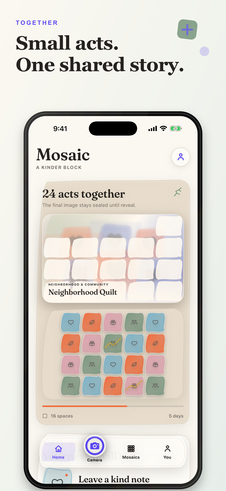
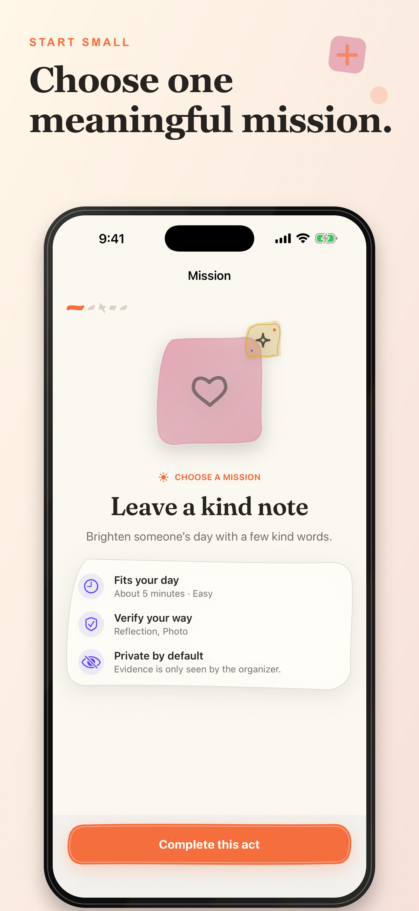
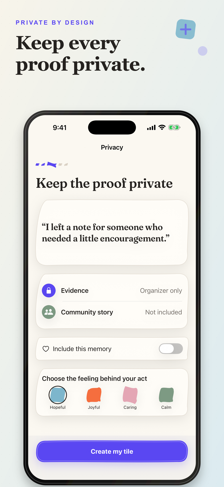
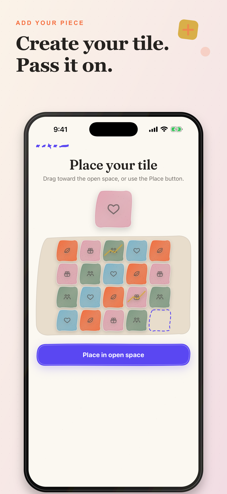
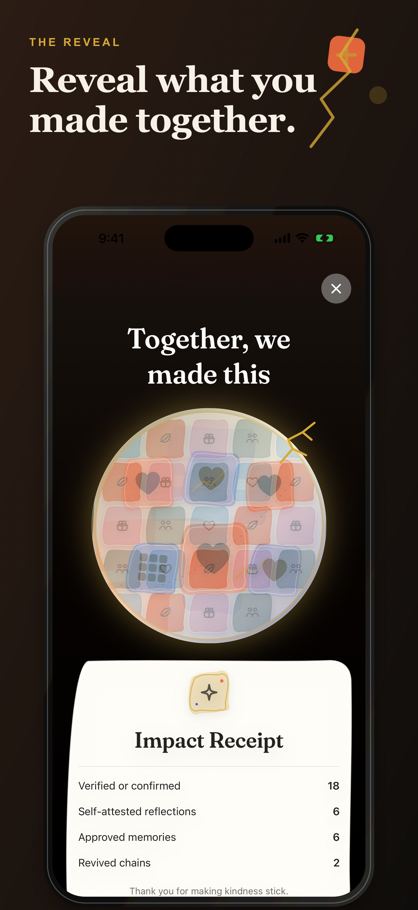

Start a challenge
Choose a goal, a reveal date, meaningful missions, and who can take part.
Invitation code: . Open the app to join the private challenge.
Kindness, made visible
Mosaic turns real-world acts of care into one living ceramic artwork. Every contribution has equal weight. Every memory stays yours to share.
Built for iPhone · No likes, rankings, or public profiles

How it works
A simple rhythm turns scattered good deeds into a shared memory your whole community can keep.
Choose a goal, a reveal date, meaningful missions, and who can take part.
Pick something approachable—leave a note, help a neighbor, donate, teach, or show up.
Verify privately, choose the feeling behind the act, then place your equal-size ceramic piece.
Watch the final artwork emerge, revisit approved memories, and share a consent-aware recap.
The experience
Real app screens show the complete arc: choose, protect, create, place, and celebrate.




Consent first
Mosaic treats evidence, identity, storytelling, and export as four different choices—not one blanket permission.
Proof is visible only to you and authorized organizers who need it for review.
Participate with a first name, anonymously, or quietly without public attribution.
Community memory and recap permissions are separate, clear, and changeable when eligible.
For communities
Create invitation-only challenges for a school, neighborhood, workplace, nonprofit, or group of friends—without turning care into a competition.
Good to know
No. Challenges are unlisted and invitation-only. There are no followers, public profiles, likes, comments, or leaderboards.
No. Participants can join guest-first. Sign in with Apple is used when someone needs recoverable organizer access, purchases, or cross-device history.
Private evidence is limited to the contributor and authorized organizers. It does not automatically become part of the community story.
Yes. Account deletion begins inside Mosaic. You can also manage eligible consent choices and content in the app. See our deletion guide for details.
Mosaic is preparing for public release. Join early access to hear when the first App Store version is ready.
Mosaic is preparing for iPhone. Get early access updates or tell us about the community you want to bring together.
Get early access